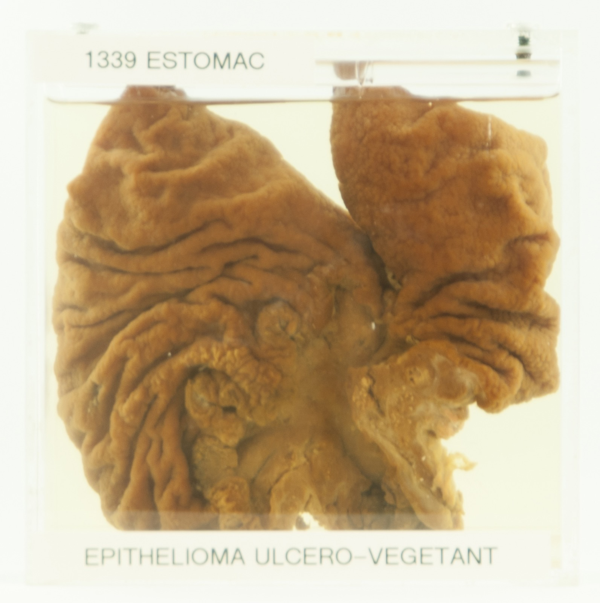
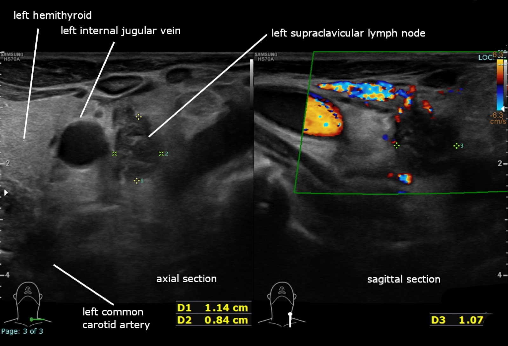
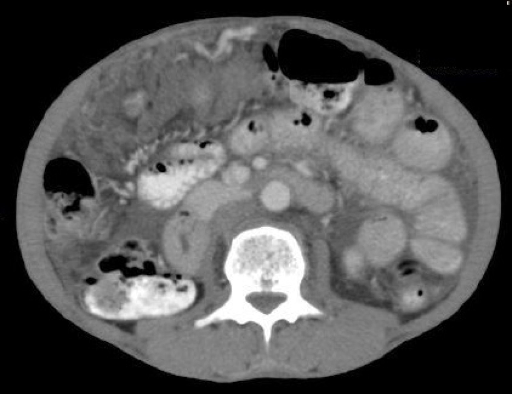
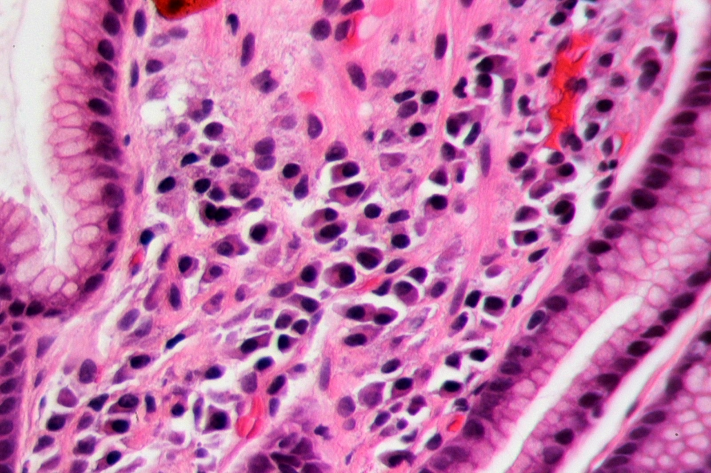
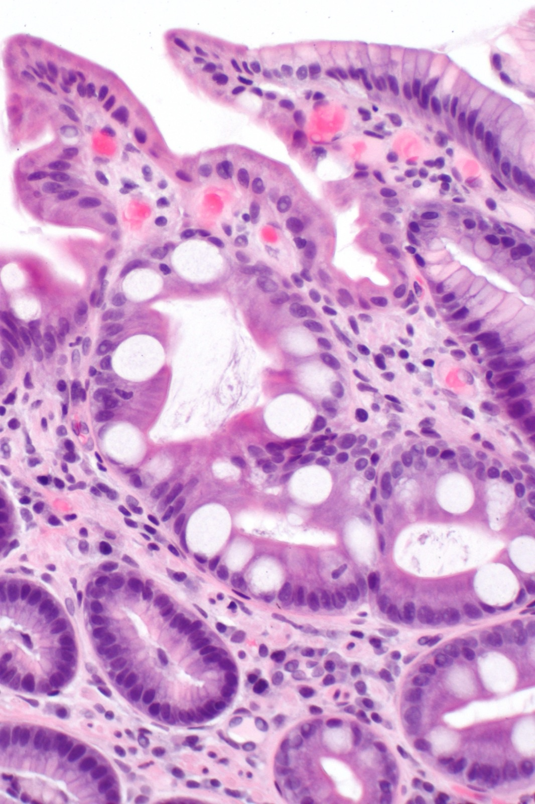
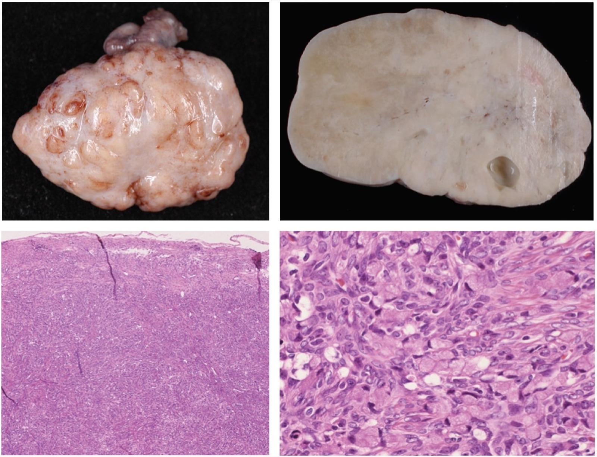
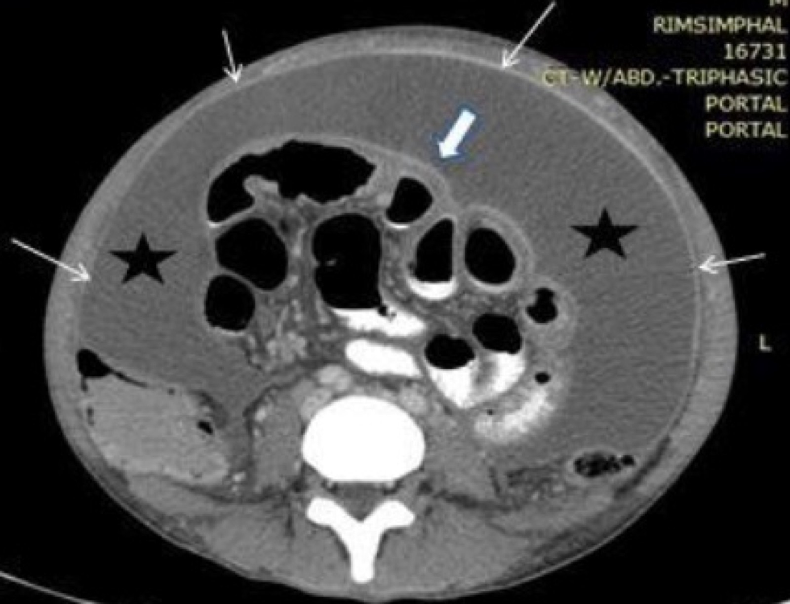
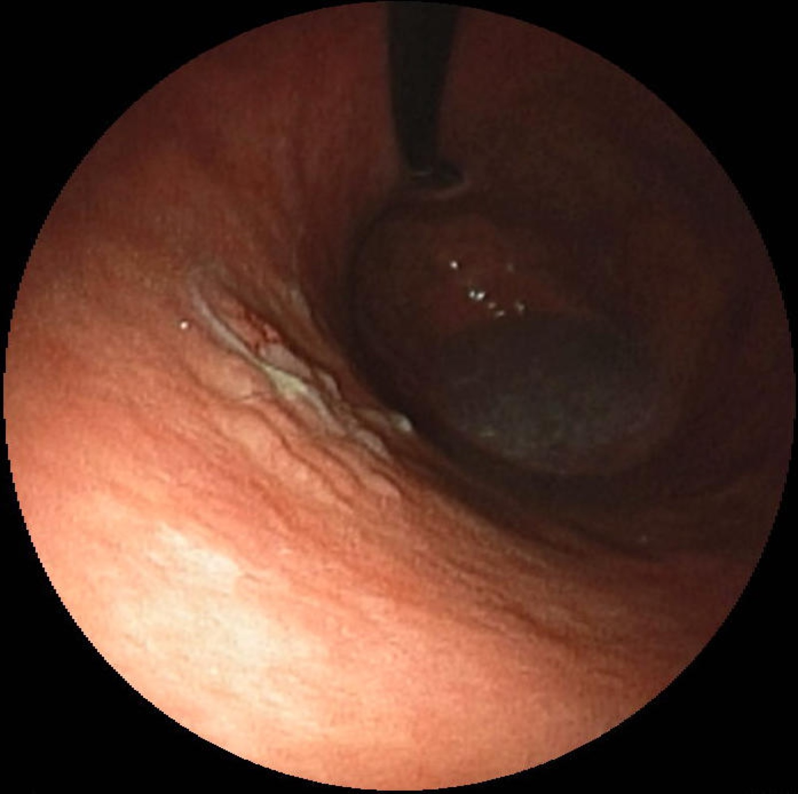
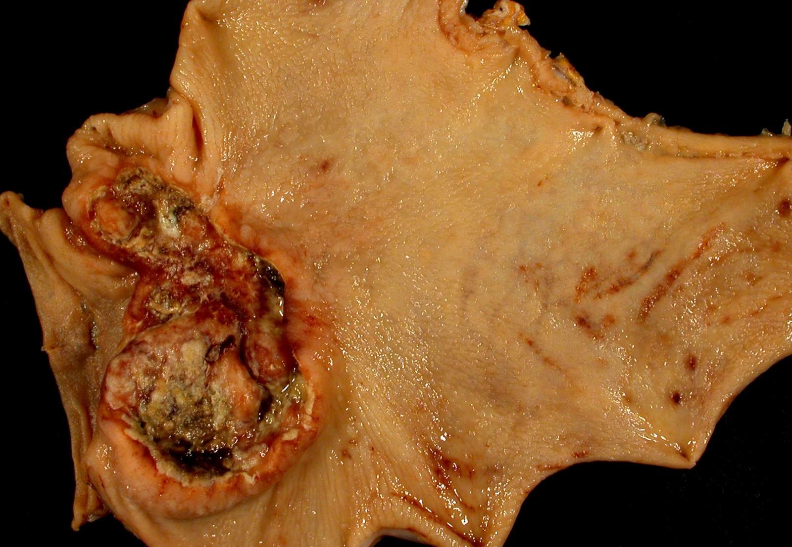
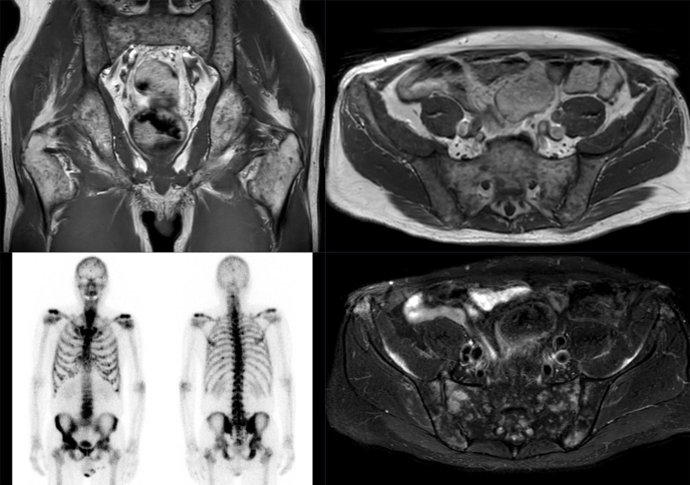

Espalha como pragaJá semeou o peritônio?Transcelômica
Câncer gástrico: o tumor praga
Estômago é a aula irmã do esôfago — e o eixo que organiza tudo é uma só ideia: o câncer gástrico espalha como praga. Por isso, antes de qualquer conduta, a obsessão é uma: ele já semeou o peritônio? 14 páginas, do caso clínico à cirurgia.
Por que "praga": a doença corre na frente do sintoma. Avance as quatro fases — o câncer já invade a parede e semeia enquanto o estômago ainda não dói. Quando o sintoma aparece, a doença costuma ser profunda e disseminada.
fase 1 de 4
motilidade gástrica
14páginas
26questões
9esquemas autorais
transcelômicao foco da aulaa via que semeia o peritônio
Uma só ideia organiza a aula: o gástrico espalha como praga
Trilha da aula
O que a aula desarma e o que ela reaproveita do esôfago
Armadilhas que esta aula desarma
"Dieta rica em fibras" como fator de risco — é o contrário.
Trocar câncer precoce (T1 qualquer N) por critério de mucosectomia (T1a N0).
Escrever "pelo menos 15 linfonodos" na D2 — é > 15, ou seja, ≥ 16.
Atribuir o H. pylori ao esôfago, ou o marcador CA 72-4 ao esôfago.
Confundir Borrmann (macro, endoscopista) com Lauren (micro, patologista).
Conceitos reaproveitados da Aula 1
Esôfago e estômago são neoplasias irmãs.
USE é o melhor exame para definir o T (profundidade).
A regra da biópsia: víscera oca acessível pode; maciça intraperitoneal evita.
QT neoadjuvante → cirurgia, com a diferença de que o gástrico é sempre adeno.
O que a banca quer desta aula
Reconhecer o padrão "doença praga" (síndrome consumptiva + sinais de disseminação sem sintoma localizador inicial) como câncer gástrico, e dominar as duas classificações (Borrmann/Lauren), os critérios de mucosectomia, a definição de precoce e a conduta cirúrgica por topografia.

A cara do "tumor praga": adenocarcinoma úlcero-vegetante da cárdia (homem de 68 anos), lesão proximal que infiltra toda a espessura da parede — a topografia alta que, na p13, pedirá gastrectomia total. Denis Desaulniers & Bernard Têtu, Université Laval / Maude Abbott Medical Museum (McGill), via Wikimedia Commons · CC BY-SA 4.0.
Quiz — fixação
Qual ideia organiza toda esta aula de câncer gástrico?
Gabarito: A. O eixo da aula é uma só ideia: o câncer gástrico espalha como praga, e por isso a primeira pergunta diante dele é se já semeou o peritônio (disseminação transcelômica). "Crescimento lento, quase sempre curável" (B) é o oposto do espírito da aula — é justamente o padrão de doença disseminada que se aprende a reconhecer. "Dose de quimioterapia" (C) não é o foco: a aula trabalha o reconhecimento do padrão e o estadiamento, não esquema de droga.
Por que cair na B: quem associa "câncer precoce" com "fácil de curar" generaliza e marca otimismo, mas a aula nasce do caso de doença já espalhada. Por que cair na C: esquema de QT parece "o tratamento" e seduz quem busca conduta, mas o ponto da aula é mais a montante — reconhecer a praga e estadiar.
Pelo mapa da aula, qual via de disseminação é o foco central do câncer gástrico?
Gabarito: A. O próprio mapa destaca a transcelômica como o foco da aula — é a via que joga células na cavidade e semeia o peritônio, produzindo ascite e implante ovariano. A hematogênica (B) existe no gástrico, mas leva tipicamente a fígado/pulmão, não é o eixo da aula e o "osso" é mais cara de próstata. A perineural (C) é via de outros tumores (pâncreas, próstata) e não é o mecanismo da carcinomatose gástrica.
Por que cair na B: "metástase à distância" puxa para a corrente sanguínea, e quem não fixou a transcelômica recorre ao reflexo hematogênico. Por que cair na C: "perineural" soa sofisticado e tenta quem quer parecer detalhista, mas não tem relação com a marca registrada do estômago.
Página 2 / 14
Supraclavicular + ascite + KrukenbergOnde está o primário?Implante ≠ tumor primário
Caso 5 · ambulatório de clínica
Mulher de 46 anos: fadiga, anorexia e saciedade precoce há meses. Emagrecida, hipocorada. Um linfonodo supraclavicular esquerdo endurecido. Ascite. Implante metastático no ovário direito. Doença avançada — mas onde está o primário?
O caso da mulher de 46 anos
Doença espalhada por todo lado, sem um sintoma que aponte o primário
Este caso vai costurar a aula inteira, e ele foi montado para confundir de propósito. A paciente tem todos os sinais de uma doença avançada e espalhada — só que, à primeira vista, nenhum sintoma que aponte de onde ela saiu. Não há disfagia (que faria pensar em esôfago, como no Sr. Aurelino da Aula 1), não há obstrução intestinal. Só uma síndrome consumptiva e rastros de disseminação.
Leia o exame físico como quem procura pistas, porque cada achado afasta uma hipótese ou aponta outra:
Cada achado afasta uma hipótese ou aponta outra
Síndrome consumptiva: fadiga, anorexia, saciedade precoce, emagrecimento, hipocorada. O organismo está sendo consumido.
Tireoide normal: afasta um nódulo de tireoide como origem.
Linfonodo supraclavicular esquerdo — endurecido, indolor, aderido. Guarde esse achado: é um dos sinais mais importantes de toda a oncologia.
Abdome: leve aumento de volume + macicez móvel de decúbito, sem massas palpáveis = ascite.
Sem circulação colateral superficial: afasta cirrose como causa da ascite.
RX de tórax e mamografia normais: afastam, em boa parte, câncer de pulmão e de mama.
USG pélvico: lesão hipoecoica no ovário direito, compatível com implante metastático — note: implante, não tumor primário de ovário.
Doença avançada sem localizador: por que isso estreita (e não abre) o diagnóstico
O que mais incomoda neste caso é uma ausência. Há sinais de doença espalhada por todo lado — linfonodo, ascite, ovário — e nenhum sintoma que diga de onde o tumor saiu. Não há disfagia (que apontaria o esôfago), não há obstrução intestinal (que apontaria o cólon). Só uma síndrome consumptiva e rastros de disseminação.
Parece que faltam dados, mas é o contrário: esse desenho é, ele próprio, uma pista forte. Um primário que se espalha cedo e largamente, escondendo-se sem dar sintoma local, tem um suspeito de elite — o câncer gástrico. A própria falta de localizador é a marca registrada: o estômago semeia a distância antes de "avisar" onde está.
Ler o exame físico como exclusão: o que sobra é o diagnóstico
Cada achado foi colocado para afastar uma origem, até sobrar uma só. Tireoide normal exclui nódulo de tireoide; ausência de circulação colateral exclui cirrose como causa da ascite; RX de tórax e mamografia normais afastam, em boa parte, pulmão e mama. À medida que os órgãos "de fora do abdome" caem, o ponteiro converge para uma víscera abdominal alta — e o conjunto restante (Virchow + ascite + implante ovariano) só fecha bem com o estômago.
Repare ainda na palavra do laudo do USG: "implante" metastático, não "tumor de ovário". "Implante" já é leitura de secundarismo — depósito que veio de outro lugar. É a deixa para procurar o primário em outro andar, não no próprio ovário.
O incômodo é justamente esse: uma mulher relativamente jovem, com sinais de que a doença já se espalhou para todo lado — linfonodo, barriga (ascite), ovário — e ainda assim sem um sintoma que grite "o primário é aqui". É esse padrão — disseminação sem localizador — que denuncia o câncer gástrico.
A pista que entrega o diagnóstico
Doença disseminada (ascite + linfonodo supraclavicular esquerdo + implante ovariano) sem localizador, numa síndrome consumptiva: esse desenho é a assinatura do câncer gástrico — e a disseminação transcelômica é quem explica por quê.
Quatro pistas, um primário escondido. Toque, clique ou foque cada achado da paciente para ver o que ele entrega — a consumpção dá o cenário; a ascite e o ovário, a disseminação; o linfonodo de Virchow é o que aponta o abdome como origem.

Linfonodo supraclavicular esquerdo aumentado e arredondado à ultrassonografia do pescoço — o linfonodo de Virchow, a pista que entrega o primário abdominal/gástrico do caso. Cerevisae, via Wikimedia Commons · CC BY-SA 4.0.
Quiz — fixação
Entre os achados da paciente, qual mais fortemente aponta um primário abdominal?
Gabarito: A. O supraclavicular esquerdo (Virchow) recebe a drenagem linfática das vísceras abdominais — aumentado, é câncer abdominal até prova em contrário. A ascite isolada (B) é sinal de disseminação, mas inespecífica quanto ao primário (poderia ser cirrose, já afastada aqui): não localiza o sítio. A hipocoria (C) traduz anemia/consumo, não aponta de onde vem o tumor. A idade de 46 anos (D) não localiza nada — aqui a paciente jovem é até pista para o subtipo difuso, não para o sítio do primário.
Por que cair na B: a ascite é o achado mais "barulhento" do exame e seduz quem confunde extensão da doença com localização do primário. Por que cair na C/D: hipocoria e idade chamam atenção no enunciado, mas são dados de fundo (consumo, faixa etária) que não apontam órgão de origem.
A lesão ovariana é descrita como "implante metastático". Por que isso não é um câncer primário de ovário?
Gabarito: B. "Implante" descreve depósito secundário; a metástase ovariana de tumor gástrico tem nome próprio — tumor de Krukenberg. "Ovário não causa ascite" (A) é premissa falsa: o câncer de ovário também causa ascite, então a ascite não serve para excluí-lo. "Jovem demais para câncer de ovário" (C) é falso: idade não exclui ovário — o que aponta secundarismo é a palavra "implante", não a idade. "USG nunca diferencia" (D) exagera: a própria descrição "implante" já é leitura de secundarismo — o USG sugere, a biópsia confirma.
Por que cair na A: usar a ascite como critério de exclusão parece lógico, mas ovário também ascita. Por que cair na C/D: idade e "limites do exame" são reflexos cômodos para quem não fixou que a chave está na palavra "implante" (depósito secundário).
Página 3 / 14
Doença praga, tumor praga3 vias de disseminaçãoMestre na transcelômica
Doença praga, tumor praga: pense câncer gástrico.
O fio condutor da aula
O tumor praga e as três vias de disseminação
O estômago é mestre na via que a maioria dos tumores usa pouco
Vale uma imagem para guardar: praga é aquela plantinha que nasce fora de controle na plantação. Você preparou a terra, plantou só café, e começa a brotar mato por todo lado onde você não jogou semente nenhuma. Foi assim que a doença desta paciente se comportou — ela "brotou" no linfonodo, na barriga e no ovário, como se estivesse jogando sementes para todos os cantos.
Por que justamente o câncer gástrico? Porque todo tumor dispõe de três vias de disseminação, e o estômago é mestre na terceira — a que a maioria dos tumores usa pouco:
A via que entrega o gástrico. Toque, clique ou foque cada via para ver onde ela deposita a doença. A linfática sobe ao linfonodo; a hematogênica leva a fígado e pulmão; a transcelômica — assinatura do estômago e do ovário — solta células na cavidade que germinam no peritônio, no ovário e no umbigo. É ela que explica a ascite e o implante ovariano do caso.
Por que o caso plantou um tumor no ovário de propósito
Repare por que o caso colocou um tumor no ovário: o câncer de ovário também usa muito a via transcelômica, então a banca cria a dúvida de propósito. Mas o contexto inteiro (Virchow + ascite + síndrome consumptiva) pesa muito mais para o estômago — e, diante de doença praga, investigar câncer gástrico é obrigação.
Como a via transcelômica realmente funciona
Vale destrinchar o mecanismo, porque é dele que sai a analogia da praga. O tumor gástrico cresce na parede, ulcera e rompe a superfície da serosa — e então, em vez de viajar por um vaso, ele simplesmente "vaza" células direto para dentro da cavidade peritoneal. Essas células flutuam no líquido peritoneal e, como sementes carregadas pelo vento, caem e germinam à distância: no peritônio (carcinomatose), no fundo de saco, nos ovários, no umbigo. É exatamente a praga — brotou sem que ninguém tenha plantado naquele canto.
Por que quase nenhum outro tumor faz isso? Porque a transcelômica exige um tumor que tenha acesso à cavidade peritoneal e caia nela. O estômago e o ovário são, por essência, os dois que mais usam essa via — daí o caso plantar um implante no ovário de propósito, criando a dúvida entre os dois. A maioria dos demais tumores dissemina sobretudo por linfonodo e por corrente sanguínea, e quase não lança mão da terceira porta.

TC de abdome com omental cake: espessamento nodular do grande omento captante de contraste sobre ascite — o destino transcelômico (peritônio) que o esquema das 3 vias descreve. Subhaschandra Singh, Y. Sobita Devi, Shweta Bhalothia & V. Gunasekaran (2016), via Wikimedia Commons · CC BY 4.0.
Uma via, três achados do caso
A ascite, o implante ovariano (Krukenberg) e os nódulos peritoneais da paciente não são três problemas diferentes — são a mesma via transcelômica vista em três pontos da cavidade. Reconhecer isso é o atalho: onde houver carcinomatose / ovário / ascite maligna no enunciado, leia "transcelômica" e mire o estômago.
Como isso vira enunciado
Quando a questão descreve metástases peritoneais, ovarianas ou ascite com citologia positiva, está apontando a via transcelômica — e empurrando você para o câncer gástrico. "Carcinomatose peritoneal" e "Krukenberg" são as palavras-chave dessa via.
Quiz — fixação
Qual via de disseminação explica, ao mesmo tempo, a ascite, o implante ovariano e os nódulos peritoneais?
Gabarito: C. A transcelômica é o desprendimento de células que caem na cavidade e implantam no peritônio e no ovário — explica ascite + implante ovariano + nódulos peritoneais de uma vez. A linfática (A) explica o Virchow (supraclavicular), não o implante ovariano nem os nódulos peritoneais. A hematogênica (B) leva a fígado/pulmão, destino errado para peritônio/ovário. A perineural (D) é via de outros tumores (pâncreas, próstata), não o mecanismo da carcinomatose gástrica.
Por que cair na A: "metástase + linfonodo" leva ao reflexo linfático, mas o linfático explica só o Virchow, não a tríade peritoneal. Por que cair na B: "disseminada" puxa para a corrente sanguínea, e quem não associa peritônio à transcelômica marca hematogênica.
Além do estômago, qual tumor é classicamente lembrado por usar muito a via transcelômica?
Gabarito: A. Ovário e estômago são os dois tumores transcelômicos por excelência — por isso o caso usa o implante ovariano como armadilha proposital. A próstata (B) dissemina por via hematogênica (osso) e linfática, não transcelômica. A tireoide (C) dissemina por linfática e hematogênica, não é transcelômica. O não melanoma (D) é doença majoritariamente local/linfática, longe da transcelômica.
Por que cair na B: próstata é o reflexo de "metástase clássica", mas o destino dela é osso (hematogênica), não a cavidade. Por que cair na C/D: são lembrados por outras vias e entram como ruído para quem não fixou o par ovário-estômago.
Página 4 / 14
Risco em dois gruposFibra é protetora, não riscoH. pylori = estômago
Fatores de risco: hábitos × H. pylori
Dois blocos de risco evitam decoreba e blindam contra a pegadinha
Organize os fatores de risco em dois grupos. Pensar nesses dois blocos evita decoreba solta e protege contra a pegadinha clássica da banca.
Dois blocos, uma armadilha. Os fatores de risco do câncer gástrico se organizam em hábitos (nitrogenados, conservantes, defumados, tabaco, álcool) e H. pylori (e suas complicações). Alterne as colunas — e veja por que "dieta rica em fibras" é a pegadinha clássica: fibra é protetora, nunca fator de risco.
Dois grupos de fatores de risco do câncer gástrico
Grupo
O que entra
Detalhe que cai
Hábitos do paciente
Dieta com nitrogenados e conservantes (mortadela, defumados, alimentos em conserva, industrializados) · tabagismo · etilismo
"Defumado é muito ruim." Tabagismo é risco para praticamente todo câncer.
H. pylori
Infecção crônica e suas complicações: gastrite atrófica; gastrectomia prévia por doença ulcerosa péptica em contexto de H. pylori
Discute-se se o risco é da bactéria em si ou só das complicações — para a prova, considere H. pylori = fator de risco do estômago.
Por que conservantes e defumados pesam — e o que a banca chama de "industrializado"
O primeiro grupo é o do hábito, e o eixo dele é a agressão química crônica da mucosa gástrica. Dieta rica em nitrogenados e conservantes — mortadela, embutidos, alimentos em conserva, industrializados — expõe o estômago, refeição após refeição, a compostos que irritam e transformam o epitélio ao longo de anos. O defumado é destacado à parte ("defumado é muito ruim"): a defumação carrega o alimento de subprodutos agressores. Some tabagismo (risco para praticamente todo câncer) e etilismo, e está montado o perfil de quem agride o estômago de fora para dentro.
H. pylori: bactéria em si ou complicação? Para a prova, é risco do gástrico
Há uma discussão legítima por trás do H. pylori: o risco é da bactéria em si ou apenas das complicações que ela provoca — a gastrite atrófica crônica e, no passado, a gastrectomia prévia por doença ulcerosa péptica em contexto de infecção? Para o raciocínio de prova, o nó se desfaz com uma posição firme: o H. pylori é, sim, fator de risco para câncer gástrico — seja pela inflamação crônica direta, seja pelas complicações que ele desencadeia. É carcinógeno reconhecido (classe I).
E aqui mora a separação mais cobrada: o H. pylori marca o estômago, não o esôfago. Encontrar "infecção por H. pylori" no enunciado puxa o raciocínio para o gástrico e ajuda a descartar o esôfago — onde os vilões são outros (tabaco, álcool, líquido quente, cáusticos, tilose, DRGE/Barrett).

Gastrite por Helicobacter pylori (HE): infiltrado inflamatório crônico na lâmina própria com bacilos curvos na superfície mucosa/foveolar — o fator de risco gástrico que a banca cobra. Patho, via Wikimedia Commons · CC BY-SA 3.0.
A pegadinha das fibras
A banca troca "dieta com conservantes" por "dieta rica em fibras" e espera você marcar como fator de risco. Fibra é protetora — não é risco. O risco está nos nitrogenados, conservantes e industrializados.
H. pylori é risco do estômago — jogá-lo no esôfago é o deslize clássico
Não confundir com o esôfago
O H. pylori é fator de risco do estômago, não do esôfago. Na Aula 1, os vilões do esôfago eram tabaco, álcool, líquidos quentes, cáusticos, tilose (escamoso) e DRGE/Barrett/obesidade (adenocarcinoma). Misturar H. pylori no esôfago é erro comum.
Quiz — fixação
Qual das alternativas NÃO é fator de risco para câncer gástrico?
Gabarito: B. Fibra é protetora — é a armadilha clássica: a banca troca "dieta com conservantes" por "rica em fibras". As outras três são risco real: nitrogenados, conservantes e defumados (A) são risco confirmado do gástrico ("defumado é muito ruim"); o H. pylori (C) é fator de risco do estômago (gastrite atrófica e complicações); o tabagismo (D) é risco para câncer gástrico (e para quase todos).
Por que cair na A/C/D: quem procura "a errada" sem reconhecer a troca proposital pode hesitar entre os fatores verdadeiros e escolher um deles, esquecendo que a pergunta pede o que NÃO é risco — e a fibra é justamente o protetor disfarçado.
A infecção por H. pylori é classicamente fator de risco para câncer de qual órgão?
Gabarito: A. O H. pylori é fator de risco clássico do estômago (gastrite atrófica, complicações) — a associação que a banca cobra. Esôfago (B) é o erro comum: seus vilões são tabaco, álcool, líquido quente, cáusticos, tilose e DRGE/Barrett. Cólon (C) tem risco em dieta processada, síndromes hereditárias e DII, não no H. pylori. Pâncreas (D): o H. pylori não é o fator clássico, órgão errado.
Por que cair na B: esôfago e estômago são vizinhos e a memória mistura os fatores — jogar o H. pylori no esôfago é o deslize clássico. Por que cair na C/D: são órgãos do TGI com seus próprios fatores, e entram como ruído para quem não fixou a dupla H. pylori-estômago.
Página 5 / 14
Síndrome consumptiva × localizadorDispepsia sem regurgitaçãoSinais de alarme → EDA
Clínica e sinais de alarme
Uma camada genérica que some, e um localizador que mira o estômago
A clínica do câncer gástrico tem duas camadas. A primeira é genérica e some no meio de muitos diagnósticos: a síndrome consumptiva (perda de peso, anorexia, fraqueza). A segunda é o que faz o raciocínio mirar o estômago: o sintoma localizador.
Compare com a Aula 1: no esôfago, o localizador era a disfagia (o "talo" que entala). No estômago, o localizador é a dispepsia — aquela queimação epigástrica, não acompanhada de regurgitação. A fórmula é direta:
Gatilho diagnóstico
Dispepsia + perda de peso → pense câncer de estômago.
Duas camadas que pensam diferente. A camada genérica — síndrome consumptiva — aparece em mil doenças e não localiza nada. A camada localizadora é a dispepsia (queimação epigástrica, sem regurgitação), o equivalente gástrico da disfagia do esôfago. Alterne para ver o que cada camada acrescenta — e os sinais de alarme que disparam a endoscopia.
O detalhe da dispepsia: queimação epigástrica SEM regurgitação
O localizador do estômago é a dispepsia, mas com uma descrição precisa: queimação epigástrica não acompanhada de regurgitação. Esse "sem regurgitação" não é enfeite — é o que afasta o refluxo banal. Na DRGE, o paciente regurgita, sente o conteúdo subir; na dispepsia do câncer, há a queimação no epigástrio, mas sem aquele componente de algo voltando. Assim como, no esôfago, o "talo que entala" (disfagia) localizava a lesão, no estômago é essa queimação epigástrica isolada que aponta o órgão.
Diante de dispepsia, qualquer sinal de alarme obriga a endoscopia
Sinais de alarme que indicam endoscopia
São os mesmos que usávamos na síndrome disfágica para indicar a EDA. Diante de dispepsia, qualquer um deles obriga a investigar:
E há um terceiro alerta, mais grave, que merece página própria: os sinais de doença incurável — quando o exame físico já antecipa que o paciente é paliativo.
Por que cada sinal de alarme manda fazer endoscopia
Os sinais de alarme não são uma lista decorada — cada um traduz algo que o tumor está fazendo. Hemorragia digestiva (melena, hematêmese) e anemia (sangramento crônico somado à desnutrição) dizem que a lesão sangra. Disfagia, quando aparece, sugere uma lesão alta, justacárdica, que já estreita a passagem. Idade avançada com dispepsia nova eleva a probabilidade de fundo de que aquela queixa seja câncer, não dispepsia funcional. Diante de dispepsia, qualquer um deles obriga a endoscopia — e é por isso que tratar empiricamente com inibidor de bomba, ignorando o alarme, é o erro perigoso que a banca arma.

Metaplasia intestinal gástrica (HE): epitélio gástrico substituído por epitélio tipo intestinal com células caliciformes, sobre inflamação crônica — a lesão precursora que conecta fator de risco e clínica de alarme. Nephron, via Wikimedia Commons · CC BY-SA 3.0.
Quiz — fixação
Qual é o sintoma localizador que faz o raciocínio mirar o estômago?
Gabarito: B. A dispepsia é o localizador gástrico — ainda mais somada à perda de peso —, e o detalhe é que vem sem regurgitação. A disfagia (A) localiza o esôfago: no gástrico conta como sinal de alarme se presente, mas não é o localizador. A regurgitação (C) remete a refluxo/distúrbio motor, e a dispepsia do câncer NÃO vem acompanhada dela — é a pegadinha que separa do refluxo. A icterícia (D) aponta via biliar/pâncreas/fígado, não estômago.
Por que cair na A: disfagia é o localizador do esôfago e quem vem da Aula 1 estende o reflexo. Por que cair na C: "queimação + refluxo" cola regurgitação à dispepsia, mas é justamente a ausência dela que aponta o câncer.
Paciente de 60 anos com dispepsia nova e anemia ferropriva. Qual a conduta mais adequada?
Gabarito: A. Idade + dispepsia + anemia = sinais de alarme → EDA imediata para afastar câncer. IBP empírico por 1 ano (B) é perigoso: atrasaria um diagnóstico de câncer — é o erro de tratar como dispepsia funcional. Sorologia isolada de H. pylori (C) não substitui a EDA quando há alarme: não vê nem biopsia a lesão. Dieta com fibras e observar (D) ignora o alarme — e fibra nem é fator de risco aqui; conduta passiva diante de sinal grave.
Por que cair na B: dispepsia faz pensar em refluxo funcional, e o IBP empírico é a conduta certa quando NÃO há alarme — o erro é não enxergar idade e anemia como alarme. Por que cair na C/D: parecem passos "menos invasivos", mas qualquer um deles adia a EDA que o alarme exige.
Página 6 / 14
Exame físico já diz paliativoVirchow · Irish · KrukenbergBlumer · Irmã Maria José
Os cinco sinais de doença incurável
Às vezes o exame físico anuncia o paliativo antes da biópsia
Aqui está uma peculiaridade do câncer gástrico que impressiona: às vezes, antes mesmo da biópsia, o exame físico já diz que o paciente é paliativo. São achados de disseminação transcelômica/linfática que, quando presentes, anunciam doença incurável — sem ressecção possível. São cinco achados clássicos. Comece olhando o mapa: todos seguem a lógica da drenagem e da queda de células na cavidade.
Tudo cai à esquerda e para baixo. Toque cada marcador no corpo para ver o sinal e seu mecanismo. Virchow (supraclavicular E) e Irish (axilar E) seguem a drenagem linfática abdominal, que vai para a esquerda. Blumer (fundo de saco), Krukenberg (ovário) e o nódulo da Irmã Maria José (umbigo, pelo ligamento falciforme) seguem a queda de células na cavidade — a via transcelômica.
Tudo cai à esquerda e para baixo: a drenagem e a gravidade explicam
1 · VirchowLinfonodo supraclavicular esquerdo. Uma regra categórica: nenhuma doença benigna (nem pneumonia, nem tuberculose) aumenta o supraclavicular esquerdo — supraclavicular aumentado é câncer. À esquerda aponta câncer abdominal/gástrico; à direita, câncer de pulmão. A razão é a drenagem: vísceras abdominais drenam para a esquerda; tórax/mediastino, para a direita.
2 · IrishLinfonodo axilar esquerdo. Mesma lógica de lateralidade da drenagem abdominal.
3 · Maria JoséNódulo da Irmã Maria José — no umbigo. Repare na palavra: é "nódulo", não "linfonodo", porque não existe cadeia linfática no umbigo. É tumor que caiu na cavidade, infiltrou o ligamento falciforme e subiu pelo ligamento umbilical até o umbigo. O nome homenageia a enfermeira que percebeu o péssimo prognóstico desse achado.
4 · BlumerPrateleira de Blumer. Massa palpável no fundo de saco ao toque retal — implantes transcelômicos no ponto mais baixo da cavidade. Lembre que a paciente do caso recusou o toque retal, então esse sinal ficou por avaliar.
5 · KrukenbergTumor de Krukenberg. Metástase ovariana (transcelômica) — exatamente o "implante metastático no ovário" do caso.
A regra categórica do supraclavicular esquerdo
Guarde esta como uma regra dura da semiologia oncológica: nenhuma doença benigna aumenta o linfonodo supraclavicular esquerdo. Nem pneumonia, nem tuberculose, nem infecção banal de via aérea — nada disso o estufa. Supraclavicular esquerdo aumentado é câncer até prova em contrário. Por isso, num paciente com síndrome consumptiva, esse nódulo endurecido e aderido vale tanto: ele praticamente fecha que há malignidade em algum lugar.
E a lateralidade entrega o andar do corpo. À esquerda (Virchow propriamente), aponta câncer abdominal/gástrico; à direita, aponta tórax/pulmão. O motivo é a rota linfática: a drenagem das vísceras abdominais converge para a esquerda (desaguando perto da junção do ducto torácico com a veia subclávia esquerda), enquanto o tórax e o mediastino drenam para a direita. Não é a posição física do estômago que importa — é o caminho por onde a linfa escoa.
Por que "nódulo" da Irmã Maria José, e não "linfonodo"
O nome homenageia uma enfermeira de enfermaria oncológica que percebeu um padrão: todo paciente que aparecia com um nódulo palpável no umbigo tinha prognóstico péssimo. A precisão do termo é o que cai em prova — é nódulo, não linfonodo, porque não existe cadeia linfática no umbigo. O que se palpa ali é tumor, não gânglio.
O mecanismo fecha com a via transcelômica: a célula cai na cavidade, infiltra o ligamento falciforme (que prende o fígado à parede abdominal anterior) e sobe por ele até o ligamento umbilical, brotando como nódulo tumoral no umbigo. Marcar "linfonodo umbilical" numa questão é o deslize clássico que o detalhe desmonta.
O detalhe que muda o gabarito
"Nódulo umbilical" e não "linfonodo" — porque no umbigo não há linfonodo. E "supraclavicular esquerdo = Virchow = câncer abdominal/gástrico" é das associações mais cobradas da oncologia.
Completando os cinco sinais (DDV-1)
São três os epônimos nomeados — Virchow (supraclavicular esquerdo), Irish (axilar esquerdo) e Irmã Maria José (nódulo umbilical). Os dois que completam os cinco são igualmente transcelômicos e aparecem no próprio caso: a prateleira de Blumer — massa palpável no fundo de saco ao toque retal (a paciente recusou o toque, então esse sinal ficou por avaliar) — e o tumor de Krukenberg, a metástase ovariana (o "implante no ovário" do caso). Todos seguem a mesma lógica: linfa converge à esquerda; células soltas caem por gravidade no fundo de saco e nos ovários, ou sobem pelo falciforme até o umbigo.

Tumor de Krukenberg: peça macroscópica do ovário (corte) + histologia (HE) de carcinoma de células em anel de sinete metastático — o sinal nº 5 de incurabilidade, disseminação transcelômica ao ovário. Nakamura Y, Hiramatsu A, Koyama T, et al., via Wikimedia Commons · CC BY 3.0.
Quiz — fixação
Por que o linfonodo de Virchow é o esquerdo, e o que ele indica?
Gabarito: A. A drenagem linfática abdominal converge para a esquerda (ducto torácico) — por isso o supraclavicular esquerdo aumenta nos cânceres abdominais. "Coração comprime o ducto" (B) é causa inventada: o mecanismo é a rota de drenagem, não compressão. "Estômago fica à esquerda" (C) é simplificação: o que importa é a drenagem, não a topografia do órgão. "Só a esquerda tem linfonodos" (D) é falso — há linfonodos nos dois lados, e o direito aponta tórax/pulmão; a lateralidade indica origem, não exclusividade.
Por que cair na C: "estômago é à esquerda" parece intuitivo e cola posição com drenagem. Por que cair na B/D: tentam explicar o lado por mecanismos plausíveis (coração, exclusividade), mas a chave é a convergência linfática para a esquerda.
Por que o achado da Irmã Maria José é chamado de "nódulo" e não de "linfonodo"?
Gabarito: B. O umbigo não tem linfonodo — por isso "nódulo", não "linfonodo": é infiltração tumoral pelo ligamento falciforme/umbilical (via transcelômica). "Sempre benigno" (A) é o oposto: o nódulo da Irmã Maria José é sinal de péssimo prognóstico. "Linfonodos só no pescoço" (C) é falso: existem por todo o corpo; a questão é a ausência específica no umbigo. "Metástase hematogênica" (D) troca a via — o mecanismo é transcelômico (queda na cavidade + infiltração do ligamento), não a corrente sanguínea.
Por que cair na D: "chegou longe = caiu no sangue" é o reflexo hematogênico, mas o nódulo umbilical é transcelômico. Por que cair na A/C: tentam explicar o nome "nódulo" por benignidade ou por anatomia errada, ignorando que o ponto é não existir cadeia linfática no umbigo.
Página 7 / 14
EDA + biópsia, sem mistérioCA 72-4 pouco específicoQuase sempre adenocarcinoma
Diagnóstico: EDA, biópsia e o CA 72-4
Víscera oca e acessível: a câmera vê e a biópsia confirma
Diagnóstico do câncer gástrico, sem mistério: endoscopia digestiva alta + biópsia.
É a mesma lógica da regra de ouro da biópsia da Aula 1: o estômago é víscera oca, acessível pela câmera e biopsiável sem risco de semeadura peritoneal. A EDA mostra a lesão e a biópsia confirma o histopatológico — que aqui será, quase sempre, adenocarcinoma.
Por que o estômago se biopsia sem medo
No estômago, o diagnóstico é direto justamente porque ele obedece à regra de ouro da biópsia: é uma víscera oca, acessível pela câmera, e a pinça retira um fragmento da lesão sem risco de semear o peritônio. Diferente de uma víscera maciça (fígado, pâncreas), onde puncionar pode espalhar células ou sangrar, aqui a lesão está contida dentro do tubo — a endoscopia vê e a biópsia confirma com segurança. O histopatológico devolve, quase sempre, o mesmo veredito: adenocarcinoma.
Antes de olhar a imagem da lesão, fixe o que procurar: uma lesão de mucosa que pode ser polipóide, ulcerada ou infiltrativa — e é essa aparência que vai alimentar a classificação de Borrmann.
Onde a pinça morde importa. Avance os passos: o endoscópio desce, encontra a lesão de mucosa e a pinça biopsia as bordas — não o centro necrótico, que pode vir só com tecido morto e dar falso-negativo. Os fragmentos viram histopatológico, quase sempre adenocarcinoma.
passo 1 de 4
EDA: lesão neoplásica gástrica de mucosa — bordas irregulares e mucosa adjacente nodular, o tipo de lesão que a biópsia confirma como adenocarcinoma. Fujisawa Takashi, via Wikimedia Commons · CC BY-SA 3.0.
O CA 72-4 existe, mas não diagnostica nem rastreia
E os marcadores tumorais? O câncer gástrico tem um marcador próprio, citado em prova (IAMSPE): o CA 72-4. Ele é pouco específico, então não serve para diagnóstico nem rastreio — mas existe, e é justamente o tipo de detalhe que a banca usa para diferenciar do esôfago.
Marcador pouco específico não diagnostica — então para que serve?
O CA 72-4 é o marcador classicamente lembrado para o estômago, mas a palavra-chave é pouco específico. Pouco específico significa que ele sobe em situações que não são câncer gástrico — logo, não serve para diagnosticar nem para rastrear (um valor alto não fecha doença, um valor normal não a exclui). O diagnóstico continua sendo da dupla EDA + biópsia. O marcador entra como detalhe de prova e, eventualmente, de seguimento — é o tipo de informação que a banca solta só para ver se você atribui o marcador ao órgão certo, e não ao esôfago.
Não confundir com o esôfago — mapa rápido de marcadores
Esôfago: sem marcador tumoral específico.
Estômago: CA 72-4 (pouco específico).
Cólon: tem marcador (CEA).
Hepatocarcinoma: tem marcador (alfafetoproteína).
Pâncreas: CA 19-9.
Quiz — fixação
Qual é o exame padrão para o diagnóstico do câncer gástrico?
Gabarito: A. A EDA + biópsia dá o diagnóstico histológico — vê e colhe a lesão; é o padrão para o gástrico. A TC com contraste (B) é estadiamento, não diagnóstico: não dá histologia. O CA 72-4 (C) é marcador pouco específico, de seguimento, que não diagnostica nem rastreia. A videolaparoscopia (D) é estadiamento do peritônio, em cenário selecionado e depois do diagnóstico — não é o primeiro passo.
Por que cair na B: TC é o exame "que vê tudo" no imaginário, mas seu papel aqui é estadiar, não fechar histologia. Por que cair na C/D: marcador e VLP são etapas posteriores (seguimento, estadiamento peritoneal) e seduzem quem inverte a ordem diagnóstica.
Qual marcador tumoral é, classicamente, relacionado ao câncer gástrico (ainda que pouco específico)?
Gabarito: C. O CA 72-4 é o marcador classicamente lembrado para o estômago (pouco específico, de seguimento). O CA 19-9 (A) é de pâncreas e vias biliares — marcador do vizinho. A alfafetoproteína (B) liga-se a hepatocarcinoma e tumores germinativos, não ao gástrico. O PSA (D) é de próstata, órgão errado.
Por que cair na A: CA 19-9 e CA 72-4 têm nomes parecidos e ambos são "CA do abdome alto", fácil trocar. Por que cair na B: AFP é o marcador mais famoso do TGI alto/fígado e atrai quem associa marcador a tumor digestivo sem precisar o órgão.
Página 8 / 14
Macroscópica, do endoscopistaMaior número, pior prognósticoLinite plástica = IV
Borrmann: a classificação macroscópica
A cara da lesão a olho nu, e a régua: maior número, pior prognóstico
No diagnóstico, procuramos sinais de "doença praga" em duas escalas: a olho nu (macroscópica) e ao microscópio (microscópica). A classificação de Borrmann é a macroscópica — quem dá é o endoscopista, descrevendo a cara da lesão. São quatro tipos, e a regra de ouro é: quanto maior o número, pior o prognóstico.
Leia da esquerda (melhor) para a direita (pior). O tipo I é polipóide — uma saliência elevada, de bordas próprias, o único de bom prognóstico. O II é ulcerado de bordas nítidas (dá para ver onde começa e termina). No III as bordas somem na infiltração. O IV não tem úlcera: a parede inteira engrossa — é a linite plástica.
Linite vem de linho: parede áspera num estômago deformado
O nome linite plástica tem uma história que ajuda a fixar. "Linite" vem de linho: o tumor infiltra a parede de tal forma que a mucosa fica espessa e áspera, como uma roupa de linho (mais áspera que o algodão). A inflamação tumoral ainda dilata o estômago e muda seu formato — daí "plástica". Resumindo a imagem: inflamação que deixou a parede parecendo linho, num estômago deformado.
O que o endoscopista vê em cada tipo — e por que o número alto é pior
Borrmann é a leitura a olho nu, quadro a quadro. O tipo I (polipóide) é uma saliência elevada, com bordas próprias, bem delimitada — a lesão "tem fim", dá para circunscrever, e por isso é a de melhor prognóstico. O tipo II é ulcerado de bordas nítidas (escavado): ainda se enxerga onde a úlcera começa e termina. No tipo III (ulceroinfiltrativo), as bordas somem — não se vê o limite porque a doença já infiltrou para os lados. O tipo IV não tem úlcera: a parede inteira engrossa de forma difusa.
A régua "quanto maior o número, pior" tem uma lógica visual simples: a perda de limite reflete perda de contenção. Bordas nítidas dizem "a doença está aqui, circunscrita"; bordas que desaparecem dizem "ela já se espalhou pela parede" — e quanto mais espalhada, maior a chance de já ter caído célula no peritônio (a doença praga). Por isso o polipóide é o único de baixo risco e o infiltrante difuso é o extremo ruim.
Linite plástica, peça por peça do nome
"Linite" vem de linho: a infiltração tumoral deixa a parede espessa e áspera, como tecido de linho (mais áspera que o algodão). "Plástica" é de plasticidade — o estômago mudou de formato: a inflamação tumoral dilatou e deformou o órgão. Junte as duas peças e você tem o quadro do Borrmann IV: parede engrossada e enrijecida, estômago deformado que não distende — é o aspecto de "garrafa de couro" que a radiografia contrastada mostra.
Radiografia contrastada na linite plástica (Borrmann IV): o estômago não distende — fica rígido e contraído, o clássico "garrafa de couro". Note a infiltração difusa, sem úlcera localizada. Maeda E, et al. Oncol Lett 2015;9(1):262-264 (PMC4246919) · CC BY.
A pegadinha do "não ulcerada"
A prova raramente escreve "polipóide". Ela diz "lesão não ulcerada" e espera que você deduza: não ulcerada ⇒ polipóide ⇒ Borrmann I ⇒ o único de bom prognóstico. E descreve "bordas não nítidas" para indicar o tipo III (infiltrativo).
Quiz — fixação
Qual tipo de Borrmann tem o melhor prognóstico?
Gabarito: A. O polipóide (I) é o único de bom prognóstico — lesão elevada, com menos chance de já ter perfurado e semeado. O II (ulcerado, bordas nítidas) já é pior que o I (a regra: quanto maior o número, pior). O III (úlcero-infiltrativo, bordas que somem) é pior que o II. O IV (linite plástica) é o extremo — o de pior prognóstico, lado oposto da régua.
Por que cair na B: "bordas nítidas" soa organizado/benigno, mas o II já ulcerou e perdeu a vantagem do I. Por que cair na D: quem inverte a régua ("maior número = melhor") marca o IV — exatamente o pior.
A EDA descreve "lesão ulcerada de bordas não nítidas, sem limite definido". A que tipo de Borrmann isso corresponde?
Gabarito: C. Bordas não nítidas = não se vê onde começa/termina = já infiltrou = tipo III. O tipo I é polipóide, não ulcerado — aparência incompatível com o enunciado. O II é ulcerado, mas com bordas nítidas (dá para ver o limite); o enunciado diz bordas NÃO nítidas — é a pegadinha do detalhe das bordas. O IV é infiltrante difuso sem úlcera (linite plástica), e o enunciado descreve lesão ulcerada.
Por que cair na B: é quase certa — o II também é ulcerado, e quem não lê o detalhe "bordas não nítidas" para no II. Por que cair na D: "sem limite definido" sugere infiltração difusa e puxa para o IV, mas o IV não tem úlcera.
Página 9 / 14
O que o microscópio mostraIntestinal × difusoAnel de sinete = difuso
Lauren: intestinal × difuso
Dois perfis quase espelhados — e a banca cobra o contraste
Se Borrmann é a cara da lesão (macro, dada pelo endoscopista), a classificação de Lauren é o que o microscópio mostra (micro, dada pelo patologista). Ela divide o câncer gástrico em dois perfis que são quase imagens espelhadas — e a banca adora cobrar exatamente o contraste entre eles.
Lauren: dois perfis espelhados
Eixo
Intestinal
Difuso
Prognóstico
Melhor
Pior
Diferenciação
Bem diferenciado
Indiferenciado
Quem é o paciente
Homem mais velho
Mulher, mais jovem
Origem
Esporádico (clássico do TGI)
Componente hereditário
H. pylori
Associado (+ gastrite atrófica)
Sem relação
Marca histológica
Glândulas tipo intestinal
Células em anel de sinete; tipo sanguíneo A
Por que tudo se inverte entre os dois — e por que o intestinal é "melhor"
Os dois perfis não são uma lista a decorar coluna por coluna: eles se invertem porque descrevem duas doenças biologicamente diferentes. O intestinal é o padrão clássico do tumor digestivo: esporádico, ligado à agressão crônica (gastrite atrófica, H. pylori), aparecendo no homem mais velho. O difuso é o avesso: tem componente hereditário, surge mais cedo, na mulher mais jovem, e não guarda relação com o H. pylori. Decorou um lado, o outro é o espelho.
E por que o intestinal tem melhor prognóstico? Porque é bem diferenciado — as células ainda formam glândulas e lembram o tecido normal, o que costuma significar comportamento menos agressivo. O difuso é indiferenciado: as células perderam a organização (é o terreno do anel de sinete), infiltram de modo disperso e se comportam pior. Diferenciação alta = parecido com o normal = melhor; diferenciação baixa = irreconhecível = pior.
A mucina empurra o núcleo para a borda — o brasão do anel
A célula que define o difuso é a famosa célula em anel de sinete. O nome vem de um objeto antigo: o anel de sinete era usado para selar cartas — pingava-se cera quente e o anel, com o brasão da família, carimbava o selo. A célula é redondinha e tem o núcleo empurrado para um extremo pela mucina que enche o citoplasma — parecendo o brasão saliente do anel.
Olhe o núcleo. O citoplasma claro (mucina) empurra o núcleo para a borda, como o brasão saliente do anel de sinete. Ver "anel de sinete" no laudo = subtipo difuso = tumor pouco diferenciado = pior prognóstico.
Histologia (HE) do adenocarcinoma difuso real, ao lado do esquema: cada célula tem um vacúolo de mucina que empurra o núcleo para a borda — o "anel com a pedra" do anel de sinete. Nephron, via Wikimedia Commons · CC BY-SA 3.0.
Detalhe que aparece e não muda conduta
O subtipo difuso tem leve associação com o tipo sanguíneo A. É só um achado descritivo — não indica rastreio nem muda conduta para quem é do tipo A.
O perfil completo que a banca cobra do difuso
Quando um enunciado quiser desenhar o pior cenário de Lauren, ele empilha os marcadores do difuso: mulher jovem, história familiar (componente hereditário), células em anel de sinete, indiferenciado e — como achado descritivo — tipo sanguíneo A. Reconhecer esse pacote junto vale tanto quanto a célula isolada: é o retrato do gástrico difuso, de prognóstico pior.
Quiz — fixação
Qual subtipo de Lauren tem melhor prognóstico e qual é seu perfil típico?
Gabarito: A. O intestinal é o de melhor prognóstico: bem diferenciado, perfil clássico do TGI (homem mais velho, esporádico, associado a H. pylori). A alternativa B descreve o difuso corretamente, mas erra o prognóstico — o difuso é o de PIOR prognóstico, e a pergunta pediu o melhor. A C troca o perfil: o intestinal não é da mulher jovem hereditária (isso é difuso). A D inverte características: o difuso é indiferenciado, não bem diferenciado.
Por que cair na B: a descrição do difuso está toda certa e seduz quem lê o perfil sem conferir se o prognóstico bate com a pergunta. Por que cair na C/D: misturam um nome de tipo com características do outro — o erro de quem decorou os atributos soltos sem pareá-los.
O laudo histológico descreve "células em anel de sinete". O que isso indica?
Gabarito: B. Anel de sinete = difuso = pouco diferenciado = pior prognóstico. O intestinal (A) tem glândulas, não anel de sinete — marcador histológico do outro tipo. "Lesão benigna" (C) é o oposto: o anel de sinete é marca de agressividade. "Tumor neuroendócrino" (D) é outra linhagem — o anel de sinete é do adenocarcinoma difuso.
Por que cair na A: quem associa "anel de sinete" a uma morfologia organizada (e não a indiferenciação) pode marcar o intestinal. Por que cair na D: "célula de aspecto peculiar" puxa para neuroendócrino em quem confunde achados histológicos chamativos.
Página 10 / 14
Neoplasias irmãsUSE para o T (igual)TC só de abdome
Esôfago e estômago são neoplasias irmãs.
Ponte com a Aula 1
Estadiamento: o irmão do esôfago
O que se reaproveita do esôfago e o que muda no estômago
Boa notícia para quem fez a Aula 1: muito do estadiamento do esôfago se repete aqui, porque os dois órgãos são vizinhos e parecidos. O que se mantém igual e o que muda:
O que se reaproveita do esôfago e o que muda
Item
Esôfago (Aula 1)
Estômago
Melhor exame do T
USE (ecoendoscopia)
USE — igual
Maior preocupação no avançado
Invadir aorta / brônquio
Ter ido para o peritônio (transcelômica)
Exame do avançado
TC (aorta) + broncoscopia (brônquio)
Avaliar o peritônio
TC
Tórax + abdome
Só abdome (não faz TC de tórax)
O que herda do esôfago e o que vira novo. Clique cada linha: a USE continua sendo o melhor exame do T (verde — igual à Aula 1). O que muda é o avançado — no estômago a obsessão é o peritônio, não a aorta — e a imagem: TC só de abdome, sem TC de tórax (coral — as diferenças que a banca cobra).
A obsessão deixa de ser víscera nobre e passa a ser o peritônio
A USE continua sendo o melhor exame para o T: ela mostra se a lesão ainda está na mucosa (T1a) ou se já atravessou camadas e pegou víscera adjacente. Até aqui, nada muda em relação ao esôfago.
O que muda é o foco do avançado. No esôfago, a obsessão era uma estrutura nobre vizinha (aorta, vista na TC; brônquio, na broncoscopia). No estômago não há uma víscera nobre única a temer — a obsessão é o peritônio: será que o tumor já semeou a cavidade (doença transcelômica)? Por isso, na imagem, pede-se TC de abdome para todos — e não se faz TC de tórax, já que o gástrico vive no andar abdominal.
Por que a USE é o melhor exame do T — e por que o foco mudou para o peritônio
A USE (ecoendoscopia) ganha o T porque enxerga a parede camada por camada: ela mostra se a lesão ainda está restrita à mucosa (T1a) ou se já atravessou camadas e alcançou víscera adjacente. Nenhum outro método define profundidade de parede com essa resolução — é o mesmo papel que ela tinha no esôfago.
O que muda é o avançado. No esôfago, a preocupação era uma estrutura nobre vizinha: a aorta (vista na TC) e o brônquio (na broncoscopia) — invadir uma delas mudava tudo. No estômago não há uma víscera nobre única a temer; o que tira o paciente da cirurgia é a doença ter caído no peritônio (a via transcelômica). Por isso a obsessão do estadiamento gástrico é o peritônio, e a imagem pedida para todos é a TC de abdome. Vasculhar o tórax de rotina não faz sentido para um tumor que vive no andar abdominal — daí não se fazer TC de tórax.
TC de abdome: espessamento difuso da parede gástrica (seta), do corpo ao antro — a informação macro que a TC entrega; os microimplantes peritoneais, ela não vê. Cha RR, et al. Clin Endosc 2019;52(3):278-282 (PMC6547350) · CC BY-NC.
Atualização de diretriz (DDV-2)
A resposta de prova é "TC de abdome, sem TC de tórax de rotina". Para contexto atual: diretrizes internacionais (NCCN) recomendam TC de tórax/abdome/pelve com contraste no estadiamento. Detalhe de atualização — o recorte cobrado continua sendo a TC de abdome, focada no peritônio.
Quiz — fixação
Qual é o melhor exame para definir a profundidade (T) do câncer gástrico?
Gabarito: A. A USE avalia camada a camada — é o melhor método para o T, igual ao esôfago. A TC de tórax (B) nem se faz de rotina no gástrico (tumor é abdominal): exame fora de lugar. O PET-CT (C) não define profundidade de parede (T); busca doença à distância. A radiografia simples (D) não estadia o T — não diferencia as camadas da parede.
Por que cair na C: PET-CT soa como "exame mais avançado", mas seu papel é doença à distância, não profundidade local. Por que cair na B: quem mistura o estadiamento do esôfago (que usa TC de tórax) com o do estômago marca tórax sem perceber que o gástrico é abdominal.
Por que, no estadiamento do câncer gástrico, não se faz TC de tórax de rotina (diferente do esôfago)?
Gabarito: B. O gástrico é abdominal e o alvo é o peritônio (via transcelômica) — daí TC de abdome para todos, sem TC de tórax de rotina. "Tórax não tem linfonodos" (A) é premissa falsa: tem, sim. "Mais radiação" (C) não é o motivo da decisão — é a topografia da doença. "USE vê o tórax inteiro" (D) troca a função do exame: a USE avalia a parede local (T/N), não o tórax.
Por que cair na C: "evitar radiação" é uma justificativa genérica e plausível, mas a decisão é por topografia, não por dose. Por que cair na A: tenta explicar a ausência da TC por anatomia errada, ignorando que o ponto é onde a doença vive.
Página 11 / 14
TC só vê implante ≥ 1 cmMicroimplante passa batidoDiagnóstico exige confirmação
Carcinomatose peritoneal e a videolaparoscopia
O microimplante < 1 cm passa batido na TC
Aqui mora um dos pontos mais sérios da aula. Para enxergar o peritônio, a TC tem um limite duro: só identifica implantes a partir de ~1 cm. Os microimplantes (menores que 1 cm) — exatamente os que tomam o peritônio parietal e infiltram o ligamento falciforme até o umbigo — passam batido na TC.
E há um agravante: mesmo que a TC mostrasse uma "bolinha", isso não bastaria. Por quê? Porque cravar carcinomatose peritoneal é um diagnóstico gravíssimo — significa dizer ao paciente que não há mais cura: não se opera, não se tenta mais nada com intenção curativa. Um diagnóstico desse peso não pode sair de uma imagem isolada.
Diante de suspeita, a videolaparoscopia é quem confirma
Siga as setas. A TC só flagra o grande; diante de suspeita de peritônio, a conduta obrigatória é a videolaparoscopia (biópsia dos implantes, às vezes com congelação intraoperatória). Se houver apenas ascite, coleta-se o líquido para citologia. Célula neoplásica positiva — por histologia ou citologia — confirma carcinomatose, e ela já entra como M1.
O peso do diagnóstico: por que uma imagem não basta
Cravar carcinomatose peritoneal não é só preencher um campo do estadiamento — é dizer ao paciente que não há mais cura. A partir desse rótulo, não se opera com intenção curativa, não se tenta mais nada além de paliar. Um veredito desse tamanho não pode sair de uma "bolinha" vista na TC: a imagem sugere, mas não prova, e o erro custa caro nos dois sentidos (condenar quem ainda tinha chance, ou operar quem já estava disseminado).
Por isso a confirmação é obrigatória e por tecido. Havendo suspeita de implantes, faz-se videolaparoscopia de estadiamento: entra-se na cavidade, colhem-se pedacinhos dos implantes e manda-se para o histopatológico (às vezes a congelação intraoperatória já responde se é maligno). Havendo apenas ascite, sem implantes visíveis, coleta-se o líquido e faz-se citologia. Em qualquer dos caminhos, célula neoplásica positiva confirma carcinomatose — e ela entra no estadiamento como M1, doença à distância.

TC de abdome: espessamento peritoneal com fixação central e ascite volumosa — implantes peritoneais da carcinomatose; os microimplantes < 1 cm a TC não vê (daí a VLP). Subhaschandra Singh, Y. Sobita Devi, Shweta Bhalothia & V. Gunasekaran (2016), via Wikimedia Commons · CC BY 4.0.
O que muda o gabarito
Carcinomatose peritoneal = M1 (metástase à distância) no estadiamento. E não se classifica carcinomatose só por imagem: exige confirmação (videolaparoscopia com biópsia, ou citologia positiva da ascite).
Quiz — fixação
Por que a TC não basta para diagnosticar carcinomatose peritoneal?
Gabarito: A. A TC perde os microimplantes (< 1 cm) e não confirma sozinha um diagnóstico de incurabilidade — daí exigir biópsia/citologia. "Não usa contraste no abdome" (B) é premissa falsa: usa-se contraste. "Só serve para o tórax" (C) inverte o uso — no gástrico a TC é justamente de abdome. "Nunca aparece em exames" (D) exagera: implantes ≥ 1 cm aparecem na TC; o problema são os menores.
Por que cair na D: "a TC falha" pode ser lido como "nunca vê", mas ela vê o grande — só perde o microscópico. Por que cair na C: quem mistura com o esôfago (TC de tórax) inverte o território do exame.
A citologia do líquido ascítico vem positiva para células neoplásicas. Como isso entra no estadiamento?
Gabarito: C. Citologia peritoneal positiva = carcinomatose = M1 (doença à distância) = paciente incurável/paliativo. T4 (A) é profundidade de parede/invasão de adjacências, não disseminação peritoneal. N3 (B) é carga linfonodal regional, não peritônio — o peritônio entra em M. "Não altera" (D) subestima o achado: altera radicalmente, define M1 e muda toda a conduta.
Por que cair na A: "invadiu/espalhou na cavidade" soa como T avançado, mas peritônio é M, não T. Por que cair na B: "células positivas" lembra acometimento nodal e puxa para N, ignorando que a citologia peritoneal define metástase à distância.
Página 12 / 14
Precoce ≠ elegível à mucosectomia4 critérios, todos juntosPrecoce = T1, qualquer N
A confusão clássica
"Câncer gástrico precoce" não é o mesmo que "elegível para mucosectomia". A banca mistura os dois de propósito — e quem decorou só um cai.
Mucosectomia × câncer precoce: a pegadinha
No gástrico, T1a só vai a mucosectomia se ainda não espalhou
Nos tumores muito iniciais (T1a), poderíamos tratar por mucosectomia endoscópica — sem retirar o estômago. Mas, como é um tumor praga, há um porém grande: no esôfago todo T1a faz ressecção endoscópica; no gástrico, só se houver indícios de que a lesão ainda não espalhou. São quatro critérios, todos obrigatórios:
Tamanho < 2 cm.
Borrmann tipo I (polipóide, sem ulceração — se ulcerou, a chance de já ter caído célula no peritônio é grande).
Lauren intestinal (o difuso é agressivo demais para arriscar — melhor operar).
Sem linfonodo aumentado (megalia linfonodal, vista na TC).
Em uma frase: mucosectomia exige T1a N0 + < 2 cm + sem ulceração + bem diferenciado (intestinal) + sem linfonodo megálico. É o tumor "muito, muito precoce".
Por que cada critério existe — e por que o estômago é mais rigoroso que o esôfago
No esôfago, todo T1a fazia ressecção endoscópica. No estômago não: por ser tumor praga, só se arrisca poupar o órgão quando há indícios fortes de que a lesão ainda não espalhou. Cada critério é uma trava contra a praga:
Tamanho < 2 cm — lesão menor teve menos tempo e menos massa para semear.
Borrmann I / sem ulceração — a ausência de úlcera importa porque, se ulcerou, há chance de já ter furado a parede e jogado célula no peritônio. Polipóide elevado é o que oferece essa garantia.
Lauren intestinal — o difuso é agressivo demais para arriscar deixar estômago no lugar; o risco de recidiva manda operar e retirar o órgão.
Sem linfonodo aumentado — megalia linfonodal na TC já sinaliza disseminação; havendo gânglio suspeito, a ressecção local não basta.
Some tudo: a mucosectomia exige o tumor "muito, muito precoce" — só mucosa (T1a), linfonodo limpo (N0), pequeno, polipóide e bem diferenciado. Falhou um, opera-se.

Câncer gástrico precoce à endoscopia: lesão pequena, levemente deprimida/avermelhada, restrita à mucosa — o cenário candidato a mucosectomia (T1a, se preencher os 4 critérios). Med_Chaos, via Wikimedia Commons · domínio público.
Compare os dois lados. Para ressecar por endoscopia (esquerda) a lesão tem de estar só na mucosa (T1a) e o linfonodo limpo (N0) — além de pequena, polipóide e intestinal. Já a definição de câncer precoce (direita) é mais larga: T1 (mucosa ou submucosa), com qualquer N. Ser precoce não autoriza mucosectomia.
Ser precoce é T1 com qualquer N — não autoriza mucosectomia
A definição que a banca cobra — e a armadilha
Câncer gástrico precoce = tumor T1, independente de ser T1a (mucosa) ou T1b (submucosa), independente do N (N0 ou N+), com M0. A banca escreve a definição "intuitiva" — "restrito à mucosa, sem linfonodo" — e essa está errada: essa é a condição da mucosectomia, não a definição de precoce.
Não confunda — os dois conceitos que a banca embaralha
Câncer gástrico PRECOCE (definição)
T1 — mucosa (T1a) ou submucosa (T1b) — com qualquer N (N0 ou N+), M0. É a definição: pode ter linfonodo positivo e ainda ser "precoce". Conceito de classificação, não de tratamento.
Elegível para MUCOSECTOMIA
T1a (só mucosa) e N0, somados a < 2 cm, Borrmann I (sem ulceração) e Lauren intestinal. É bem mais restrito — o "muito, muito precoce". Conceito de conduta.
A armadilha é exata: a banca oferece "restrito à mucosa, sem linfonodo" como se fosse a definição de precoce. Parece intuitivo e está errado — isso é a condição da mucosectomia. A definição de precoce é mais larga (mucosa ou submucosa, qualquer N).
Quiz — fixação
Qual é a definição de câncer gástrico precoce?
Gabarito: B. Precoce = T1 (T1a ou T1b), qualquer N, M0 — pode ter linfonodo positivo e ainda ser "precoce". A alternativa A é a armadilha central: descreve a condição da mucosectomia, não a definição de precoce. A C lista os critérios de mucosectomia, de novo trocando os conceitos. A D é ampla demais: "sem metástase" incluiria T3/T4, que não são precoces — a definição é restrita a T1.
Por que cair na A: "precoce" intuitivamente vira "só na mucosa, sem linfonodo", mas essa é a condição da ESD — o erro que a banca arma. Por que cair na C: quem fixou só os critérios de mucosectomia os repete como se fossem a definição.
Quais condições, em conjunto, autorizam a mucosectomia endoscópica no câncer gástrico?
Gabarito: A. A mucosectomia (ESD) exige os critérios juntos: T1a + N0 + < 2 cm + Borrmann I (sem ulceração) + Lauren intestinal. Falhou um, opera. "Qualquer T1 com qualquer N" (B) é a definição de precoce, não autoriza ESD — T1b ou N+ já excluem (pegadinha espelhada da questão anterior). Borrmann IV pequeno (C) é o extremo agressivo (linite plástica): jamais ESD, mesmo pequeno. Lauren difuso (D) é agressivo demais — contraindica ESD mesmo sem linfonodo; exige-se o intestinal.
Por que cair na B: confunde a definição de precoce com a indicação de ESD — exatamente o par que a aula separa. Por que cair na C/D: "desde que pequeno/sem linfonodo" tenta resgatar tipos agressivos (IV, difuso) que estão fora dos critérios independentemente do tamanho.
Página 13 / 14
A topografia decide a gastrectomiaMargem proximal 6–8 cmD2: > 15 linfonodos
Cirurgia: gastrectomia, margens e linfadenectomia D2
Sempre adenocarcinoma: só QT neoadjuvante, depois gastrectomia + D2
Fora os T1a elegíveis a mucosectomia, o tratamento segue o molde do esôfago: quimioterapia neoadjuvante → cirurgia. Uma diferença importante: o esôfago tinha dois histológicos (escamoso = quimiorradio; adeno = só QT); o estômago é sempre adenocarcinoma — logo, só QT neoadjuvante. A cirurgia é a gastrectomia + linfadenectomia a D2.
Por que só quimioterapia, sem rádio
No esôfago, o histológico mandava no esquema: o escamoso respondia a quimiorradioterapia; o adenocarcinoma, a só quimioterapia. No estômago essa bifurcação some, porque o gástrico é sempre adenocarcinoma — não há o ramo escamoso. Logo, o tratamento neoadjuvante é só QT (sem rádio de rotina), seguido da cirurgia. É a mesma lógica do esôfago, aplicada a um órgão que só tem o tipo "adeno".

Peça de gastrectomia: tumor vegetante-ulcerado de 7 cm no antro (margem duodenal à esquerda) — correlação macro de Borrmann e base da margem proximal/linfadenectomia D2. Ed Uthman (Houston, TX), via Wikimedia Commons · CC BY 2.0.
Qual gastrectomia? Decide a topografia
Olhe onde está o tumor. Lesão proximal/JEG ou de corpo/grande curvatura → gastrectomia total. Lesão distal (antro) → subtotal autorizada, porque sobra estômago para garantir a margem proximal de 6–8 cm. Os pontos azuis (D1, colados ao estômago) saem com a peça; a D2 acrescenta os próximos (amarelos) — é o padrão.
Só lesão baixa deixa coto: a margem de 6–8 cm é quem manda
Por que a topografia manda? A margem proximal precisa ser de 6 a 8 cm. Só dá para deixar um coto gástrico (subtotal) se a lesão for bem baixa (antro), porque aí, ao contar 6–8 cm para cima da lesão, ainda sobra estômago. Lesão alta não permite essa folga → total.
E a margem fina varia com o Lauren: tumor intestinal (bem diferenciado) pede 6 cm; tumor difuso (mais maligno, infiltra mais) pede 8 cm.
Margem maior no difuso: a infiltração dispersa cobra mais distância
A margem proximal de segurança não é um número arbitrário — ela acompanha o comportamento do tumor segundo Lauren. O intestinal é bem diferenciado e mais contido: cresce de forma mais delimitada, então 6 cm de margem bastam. O difuso infiltra de modo disperso e silencioso pela parede (é o mesmo padrão que dá a linite plástica), podendo haver células além do que o olho vê — por isso exige uma folga maior, 8 cm. Difuso = mais maligno = mais margem.
O que é linfadenectomia D2 — e a pegadinha do número
D1, D2 e D3
Extensão
O que remove
Status
D1 (pobre)
Só os linfonodos colados ao estômago (junção, pequena e grande curvatura, piloro) — saem junto com a peça
Insuficiente
D2 (padrão)
Os colados + os próximos (gástrica esquerda, hepática comum, esplênica, grande omento)
Equilíbrio — é o que se faz
D3 (exagerada)
Todas as ~15 cadeias da barriga (atrás da aorta, corpo/cauda do pâncreas, baço/hílio esplênico)
Proscrita — morbidade alta (Japão/Coreia)
Por que D1 é pobre, D3 é proscrita e D2 é o equilíbrio
As três extensões medem até onde se vai buscar linfonodo. A D1 leva só os gânglios colados ao estômago (ao redor da junção, pequena e grande curvatura, piloro) — eles saem junto com a peça quase de graça, mas é pouco: subestadia e deixa doença para trás. A D3 é o extremo oposto: dissecar todas as ~15 cadeias da barriga — atrás da aorta, corpo e cauda do pâncreas, baço e hílio esplênico. É tão mórbida que o paciente pode morrer do estresse cirúrgico; chegou a ser feita no Japão e na Coreia, mas hoje é proscrita de rotina.
A D2 é o ponto de equilíbrio e o padrão atual: os linfonodos colados mais os próximos (gástrica esquerda, hepática comum, esplênica, grande omento). Ganha-se estadiamento e controle oncológico adequados sem a morbidade catastrófica da D3.
O número que muda o gabarito
A D2 deve render mais de 15 linfonodos — ou seja, ≥ 16. Não é "pelo menos 15". Atenção a uma pegadinha de fonte: o Sabiston (20ª e 21ª edições) traz esse errinho ("pelo menos 15"); o correto cobrado é > 15.
Atualização de diretriz (DDV-4)
A regra de prova é "QT neoadjuvante". Para contexto atual: o esquema perioperatório de escolha hoje é o FLOT (substituiu o MAGIC/ECF) no adenocarcinoma gástrico ressecável. Detalhe de atualização — a resposta de prova segue "QT perioperatória/neoadjuvante seguida de gastrectomia + D2".
Quiz — fixação
Tumor gástrico localizado no antro. Qual gastrectomia está autorizada e por quê?
Gabarito: A. Lesão distal (antro) permite gastrectomia subtotal: contando 6–8 cm de margem proximal, ainda sobra estômago. "Total sempre" (B) é falso — a extensão depende da topografia. "Subtotal porque o antro não tem drenagem" (C) parte de premissa falsa: o antro tem drenagem linfática (a D2 remove as cadeias); a subtotal se justifica pela margem. "Total porque o antro fica perto do esôfago" (D) troca a topografia: o antro é distal — quem fica perto do esôfago é a JEG (e essa sim pede total).
Por que cair na B: "câncer = tirar tudo" é o reflexo radical, mas a extensão é guiada pela margem e pela topografia. Por que cair na C: chega ao gabarito certo (subtotal) por um motivo errado — e a banca pune a justificativa falsa.
Quantos linfonodos a linfadenectomia D2 deve idealmente render para estadiamento adequado?
Gabarito: B. Mais de 15, isto é, ≥ 16 — é o número cobrado para um estadiamento adequado. "Pelo menos 15" (A) é a pegadinha de redação: justamente o errinho citado no Sabiston (20ª/21ª) que a banca usa como distrator. "Exatamente 10" (C) está abaixo do mínimo, não é valor de referência da D2. "No mínimo 30" (D) está acima do exigido; o piso é > 15.
Por que cair na A: "pelo menos 15" e "mais de 15" parecem a mesma coisa, mas o detalhe ≥ 16 é exatamente o que diferencia o gabarito do distrator de fonte. Por que cair na D: quem associa "quanto mais melhor" superestima o piso e marca 30.
Página 14 / 14
Carcinomatose = paliaçãoNão há T4B típicoSempre começar pela EDA
Síntese, M1/paliação e a resposta ao caso
Quem tira o paciente da cirurgia é a disseminação, não uma víscera nobre
Fechando o raciocínio do tumor praga. Quando há M1 (doença à distância — e a carcinomatose peritoneal entra aqui), a conduta é basicamente paliação. Note um detalhe do gástrico: não há um T4B típico — não há uma víscera nobre adjacente cuja invasão, por si só, inviabilize a cirurgia, como a aorta fazia no esôfago. O que tira o paciente da cirurgia é, sobretudo, a disseminação (peritônio, metástase).
Por que o gástrico "não tem T4B típico" — e o que realmente condena à paliação
No esôfago, havia uma estrutura nobre vizinha cuja invasão sozinha já matava a chance cirúrgica: a aorta. No estômago não existe esse T4B típico — não há uma única víscera nobre adjacente que, ao ser invadida, condene o caso por si só. O que tira o paciente da cirurgia é, sobretudo, a disseminação: a doença ter ido para o peritônio (carcinomatose, via transcelômica) ou ter dado metástase à distância. Diante de M1 — e a carcinomatose peritoneal entra como M1 —, a conduta é paliação: o objetivo passa a ser qualidade de vida, não cura.

Metástase à distância (M1) de adenocarcinoma gástrico de células em anel de sinete (homem de 74 anos): múltiplas metástases ósseas em RM (T1 coronal/axial, T2 SPAIR) + cintilografia óssea — o desfecho M1 que tira o paciente da cirurgia, num sítio (osso) e modalidade (RM/cintilografia) distintos do peritônio. Hellerhoff, via Wikimedia Commons · CC BY-SA 4.0.
A extensão decide tudo. Clique cada cenário para ver a conduta. T1a N0 muito precoce → mucosectomia (verde). Doença ressecável, sem M1 nem carcinomatose → QT neoadjuvante e gastrectomia com D2 (azul). Mas M1 / carcinomatose peritoneal = paliação (vermelho): não há T4B típico no estômago — o que tira o paciente da cirurgia é a disseminação.
Resposta ao caso da mulher de 46 anos
Principal hipótese diante do padrão doença praga: câncer gástrico (poder-se-ia pensar também em câncer de ovário). A abordagem: endoscopia digestiva alta + biópsia do linfonodo supraclavicular esquerdo (Virchow). Como já é doença avançada, a biópsia confirma o histopatológico e coloca a paciente como paliativa; o objetivo é identificar o sítio primário. Se a EDA não diagnosticar, busca-se outro sítio (eventual videolaparoscopia) — mas sempre começando pela EDA.
A ordem que não se inverte: EDA primeiro, sempre
Diante do padrão doença praga, a principal hipótese é câncer gástrico (com câncer de ovário como diferencial, dada a via transcelômica compartilhada). A conduta começa, sem exceção, pela endoscopia digestiva alta + biópsia — porque o objetivo é identificar o sítio primário e confirmar a histologia. Como a doença já é avançada, biopsiar o linfonodo de Virchow funciona como atalho: confirma o histopatológico e coloca a paciente como paliativa de uma vez. Se a EDA não diagnosticar, parte-se para outro sítio (eventual videolaparoscopia) — mas a EDA é sempre o primeiro passo. Tratar antes de ter diagnóstico, ou pular a EDA para ir direto à VLP, inverte a sequência e erra a questão.
A aula em cinco decisões: do padrão praga à paliação
Diagnóstico: EDA + biópsia. Marcador: CA 72-4 (pouco específico).
Borrmann (macro): I polipóide é o bom; IV é linite plástica. Lauren (micro): intestinal melhor, difuso (anel de sinete) pior.
Estadiamento: USE para o T; TC só de abdome; peritônio por VLP/citologia; carcinomatose = M1.
Tratamento: mucosectomia só no muito precoce (T1a N0 + critérios); senão QT neo → gastrectomia (total/subtotal) + D2 (≥ 16 linfonodos); M1 = paliação.
Completando os 5 sinais (DDV-1)
Três epônimos nomeiam o que vimos (Virchow, Irish, Irmã Maria José). Os outros dois sinais transcelômicos clássicos de incurabilidade são a prateleira de Blumer (toque retal — que a paciente recusou) e o tumor de Krukenberg (ovário, presente no caso).
Quiz — fixação
Diante do padrão "doença praga" do caso, qual é a primeira conduta diagnóstica?
Gabarito: A. Sempre começar pela EDA (e biópsia do Virchow), para achar o primário e confirmar a histologia — diagnóstico antes de qualquer conduta. A VLP de imediato (B) está fora de ordem: entra só depois, se a EDA não esclarecer. Iniciar QT sem biópsia (C) é erro grave: não se trata sem diagnóstico histológico. Ooforectomia diagnóstica (D) não ajuda: o ovário é metástase (Krukenberg), não o primário — retirá-lo não diagnostica a origem.
Por que cair na B: a VLP é protagonista no estadiamento do peritônio e seduz quem pula a etapa diagnóstica. Por que cair na D: o implante ovariano é o achado mais "operável" à vista, mas é secundário — buscar o primário é o objetivo.
Confirmada carcinomatose peritoneal (M1) no câncer gástrico, qual a conduta?
Gabarito: C. M1/carcinomatose = doença incurável → conduta paliativa; o objetivo passa a ser qualidade de vida. Gastrectomia + D2 (A) é para doença ressecável, não M1 — operar com intenção curativa diante de carcinomatose é fútil. Mucosectomia (B) é só para o tumor muito precoce (T1a selecionado), nunca em M1. D3 ampliada (D) é proscrita por morbidade, e nem se cogita em doença M1.
Por que cair na A: "câncer = operar" é o reflexo curativo, mas em M1 a cirurgia radical não muda o desfecho. Por que cair na D: "fazer o máximo" parece agressividade terapêutica, mas a D3 é proscrita e inútil aqui.